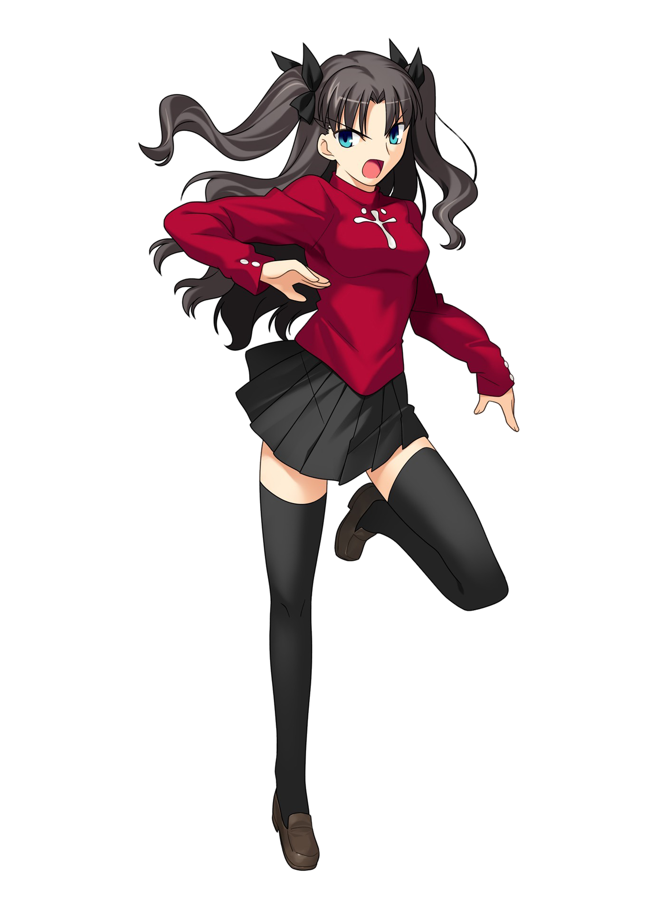
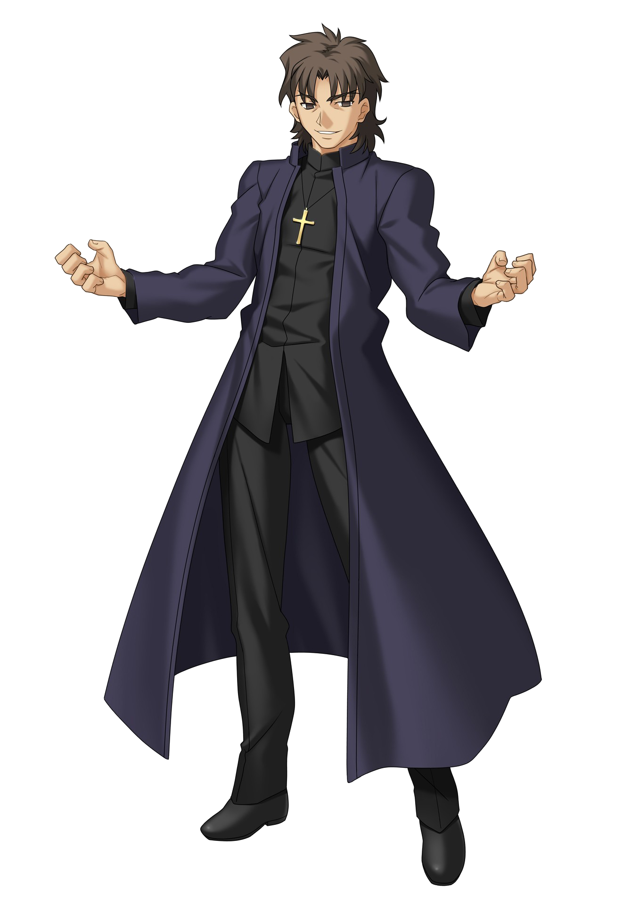
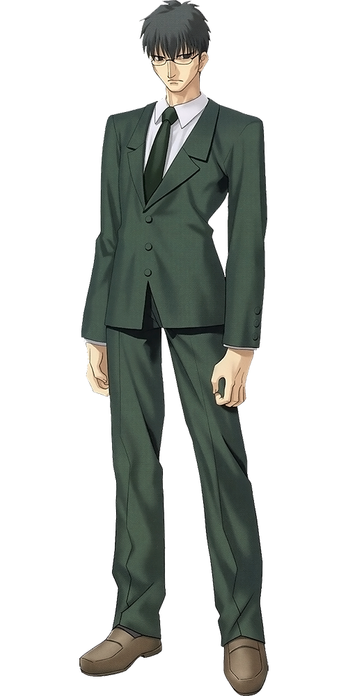

Shirō Emiya est le personnage principal de l'histoire. Lycéen de deuxième année, élève sérieux, au grand cœur et honnête, qui aime aider les autres dont les passe-temps sont notamment la réparation d'une variété d'appareils cassés (des magnétoscopes aux fourneaux) en passant par la cuisine et le nettoyage. Cependant, derrière tout cela, Shirō est un être humain profondément marqué qui est devenu orphelin après qu'un incendie, provoquée à la fin de la quatrième guerre du Saint-Graal dix ans auparavant, avait détruit une partie de la ville de Fuyuki et lui a fait perdre tout ses anciens souvenirs ; il a ainsi passé une grande partie de son enfance à se réveiller la nuit en hurlant de cauchemars provoqués par ce traumatisme. Il culpabilisa tellement à propos de sa survie qu'Ayako a déclaré qu'elle n'avait jamais vu Shirō sourire, car il pensait qu'il le ne méritait pas. De cette catastrophe, Shirō en est l'unique survivant, sauvé au bon moment par Kiritsugu Emiya ; ce dernier marqué à vie par l'idée de n'avoir pu empêcher cette tragédie, il décida d'adopter le jeune garçon et de le nommer Shirō après avoir découvert qu'il ne pouvait plus se souvenir de son vrai nom. Avec son nouveau parrain, Shirō a hérité de son sens de la justice et son envie de protéger les autres mais il lui a aussi appris un sort basique, Renforcement (Reinforce), qui lui permet d'analyser et de modifier la structure des objets, et ce à quoi il s'en servira plus tard en secret pour réparer toute sorte d'appareils. Quelques années plus tard, sa voisine et sa professeur d'anglais, Taiga Fujimura, devient sa tutrice après le décès de Kiritsugu tandis que sa camarade d'école Sakura Matō vient l'aider tous les jours pour ses tâches ménagères.
Pris par inadvertance au cœur de la Guerre du Saint-Graal, il se découvre être un Master et tente de protéger son idéal. Shirō n'est pas intéressé par le Graal et son pouvoir. Son seul désir, en étant déterminé à gagner la guerre avec Saber, est d'éviter que cette guerre ne fasse de victimes et que le Graal tombe entre de mauvaises mains pour qu'une autre catastrophe comme l'incendie de Fuyuki ne se reproduit plus jamais. Shirō pensait qu'il etait possible de sauver tout le monde sans nuire aux innocents et se concentre sur la défaite des Servant plutôt que des Masters, croyant qu'ils seront inoffensifs une fois que leurs moyens de causer le chaos auront disparu. Il pousse souvent cet idéal à l'extrême, allant jusqu'à protéger son propre serviteur du danger ou à aider une personne qui avait déjà tenté de le tuer. L'intrigue principale de Fate/stay night se concentre autour de son idéal et des trois différentes façons dont il s'en approche.
Dans le scénario Fate et celui de l'anime, Shirō acquiert une bonne maîtrise de sa compétence de Trace, à la base de Reinforce. Il est capable de synthétiser des armes extrêmement puissantes, similaires à celles des Servants, en ne les ayant vus qu'une seule fois, voire en les imaginant complètement, parmi lesquels Excalibur, Avalon, Kanshō et Bakuya, épées courtes d'Archer. Dans cette route, il choisit de préserver son idéal.
Dans le scénario Unlimited Blade Works, Shirō devient extrêmement puissant, il vainc plusieurs Servants de ses mains, notamment grâce à une version simplifiée de la Dimension Propre d'Archer (nommé justement « Unlimited Blade Works »). Son incantation est légèrement différente de celle de celui-ci. Cette puissance lui vient d'une spécificité lui permettant de ne pas avoir à créer et à maintenir la matière mais en créant la pièce à partir de lui-même. Au cours de ce scénario, on y apprend qu'Archer n'est autre que Shirō, revenu dans le passé après un pacte échangeant la réalisation d'une partie de son idéal contre le fait de devenir un Servant. Pour cette route, il accepte son imperfection mais n'abandonne pas son idéal.
Dans le scénario Heaven's Feel, Shirō se fait greffer un des bras d'Archer (juste avant la mort de celui-ci), et parvient à recréer des armes puissantes comme Rule Breaker, la Jeweled Sword of Zelretch ou Excalibur. Dans cette route, il abandonne son idéal et veille au bonheur de Sakura.
Source: Wikipedia

Rin Tōsaka (遠坂 凛, Tōsaka Rin)
Élève modèle et idole de l'école de Shirō, elle parle rarement aux autres élèves et manifeste le désir de rester seule, comme en témoigne sa tendance à rester sur le toit de l'école, loin du reste des élèves. Rin Tōsaka garde secret ses talents de magicienne et une Master de la cinquième guerre du Saint-Graal. Il y a 200 ans, la famille Tōsaka, propriétaire du deuxième lieu japonais possédant le plus d'énergie spirituelle (la ville de Fuyuki), créa la guerre du Graal de Fuyuki avec l'aide des maisons Makiri et Einzbern. Son père, Tokiomi Tōsaka, lui conseilla de faire passer la magie avant sa propre vie. Pendant son enfance, Rin a été séparée de sa sœur Sakura, qui a été donnée en adoption aux Matō. Elle n'a pu bénéficier de l'entraînement habituelle de sa famille car son père a été tué durant la précédente guerre du Graal ; elle reçu ainsi la responsabilité de veiller sur la maison et continua de perfectionner sa magie avec l'aide de son gardien, Kirei Kotomine. Même si elle déteste sa charge, son esprit compétitif et fier la pousse à aller dans la voie de son destin. Malgré qu'elle soit très douée, elle tenta d'appeler un Servant de classe Saber mais se retrouva avec Archer dont elle fut déçue et se dispute avec ce dernier, ils finiront toutefois par s'accorder et forme un puissant binôme.
Rin est spécialisée dans la transformation d'énergie, et notamment l'accumulation de mana au sein d'objets. Pour dépasser les limitations des capacités de rétention d'énergie de son corps, elle passe beaucoup de temps à charger des joyaux, qui lui servent d'accumulateurs, prêts à être dépensés en cas de besoin. En projetant ces joyaux contre un ennemi, elle est capable de porter une attaque digne des plus puissants Servants, qu'elle utilise dans le scénario Fate pour tuer Berserker. Elle utilise également fréquemment le sort Gand, dans lequel elle concentre de l'énergie au bout de son doigt pour s'en servir comme une arme à feu, qui est suffisant pour tuer un Master ou gêner un Servant.
Dans les trois scénarios, Rin fait équipe avec Shirō, où dans tous les cas, elle participe à la guerre non pour exaucer un souhait mais dans l'unique but de gagner. Dans Fate, elle sauve Shirō, victime collatérale de son affrontement contre Lancer. Elle s'allie alors à lui, l'aidant plusieurs fois alors qu'il est au bort de la mort et ira jusqu'à sacrifier Archer en l'envoyant lutter contre Berserker. Dans Unlimited Blade Works, elle est l'héroïne du scénario et est amoureuse de Shirō ; ce dernier renoncera à une partie de son rêve pour Rin. Dans Heaven's Feel, elle obtient grâce à Shirō la Jeweled Sword of Zelretch grâce à laquelle elle parvient à vaincre Sakura Matō. Source: Wikipedia
Illyasviel von Einzbern (イリヤスフィール・フォン・アインツベルン, Iriyasufīru fon Aintsuberun)
Jeune fille à l'apparence angélique, elle peut toutefois se montrer très cruelle. Héritière de la famille de mages Einzbern, elle est le Master de Berserker. Elle vit dans un château à la périphérie de Fuyuki et est uniquement accompagnée de son Servant et de ses deux domestiques Leysritt et Sella. Elle laisse les gens qu'elle aime bien l'appeler « Illya » (イリヤ, Iriya). Elle appelle Shirō « Grand-frère » (お兄ちゃん, Onii-chan) et s'attache rapidement à ce dernier. Elle est en vérité la fille biologique de Kiritsugu Emiya, le père adoptif de Shirō, et d'Irisviel von Einzbern, sa mère et le Saint-Graal de la précédente guerre ; ce qui fait d'elle la demi-sœur aînée de Shirō, ce qui lui cause un chagrin incroyable quand il réalise que Kiritsugu a sacrifié sa vie avec elle pour lui. Il est ainsi à l'origine d'une immense rancœur d'Illya, qui lui reproche d'être la raison pour laquelle son père n'est jamais revenu auprès d'elle, la laissant seule au monde. Après la fin de la quatrième guerre du Saint Graal, Kiritsugu a tenté à plusieurs reprises de revenir auprès d'Illya comme promis. Cependant, comme il n'a pas ramené le Saint-Graal, Jubstacheit von Einzbern lui a refusé l'accès au domaine des Einzbern. Illya a ensuite été élevée dans le but de croire que son père l'avait abandonnée, ne sachant pas qu'il voulait réellement la sauver du destin du Graal. Ainsi, il n'a jamais revu ni parlé à sa fille avant sa mort.
Le désir d'Illya d'en savoir plus sur la personne que Kiritsugu a élevée à sa place au cours de ses dernières l'a incité à observer Shirō dans certains cas ou à tenter de le prendre parfois comme un objet dans d'autres cas, pour au final commencer à s'attacher à ce dernier après avoir appris à le connaître et qu'il la traite gentiment malgré ses précédentes tentatives de le tuer. Elle est une homunculus comme sa mère, un circuit magique devenu humain et créée dans l'unique but de servir de réceptacle du Saint-Graal dont elle est vouée à perdre ses sentiments humains petit à petit au cours de cette guerre. En portant la Dress of Heaven et avec la mort d'au moins six Servants, elle est capable d'exécuter une version limitée de la Troisième Magie, « Heaven's Feel » (天の杯ヘブンズフィール, Hebunzu Fīru), l'un des cinq types de la « Véritable Magie » (魔法, Mahō) pouvant accomplir des impossibilités au-delà de la science moderne ou de la sorcellerie. Source: Wikipedia

Kirei Kotomine (言峰 綺礼, Kotomine Kirei)
Un prêtre agissant en tant que surveillant prétendument impartial de la guerre du Saint-Graal conformément à un accord conclu entre l'Association des mages et l'Église. Il a servi sous les ordres du prêtre de la précédente guerre du Graal, son père Risei Kotomine, avant de prendre ses fonctions. En raison de son expérience d'assassin d'élite pour l'Église, Kirei est un expert en arts martiaux chinois dont la force meurtrière est magnifiée par sa force physique monstrueuse et ses nombreux sceaux de commandement6. En tant que cerveau de la cinquième guerre du Saint Graal qui sert de lien entre les conflits de la série, est un antagoniste fondamental des trois scénarios.
Bien que possédant un fort sens moral, Kirei a découvert très tôt dans sa jeunesse qu'il ne pouvait expérimenter la joie que par la souffrance des autres. Consommé au début par le désespoir avec cette révélation, Kirei a finalement embrassé ses pulsions refoulées pour devenir un homme qui ne vit que pour le chaos et la misère. Initialement le Master d'Assassin de la quatrième guerre du Saint Graal, Kirei a secrètement assassiné son mentor, Tokiomi Tōsaka, pour obtenir Gilgamesh tout en devenant un gardien indirect de Rin. Dans le préquel de Fate/Zero, il est également révélé qu'il est responsable de l'incendie qui a tué les parents biologiques de Shirō, l'ayant indirectement souhaité de son dernier souffle après avoir été touché au cœur par un tir de Kiritsugu Emiya. Il revient immédiatement à la vie après cela et il organise quelques années plus tard la cinquième guerre du Saint Graal pour fournir au contenu maudit du Graal suffisamment d'énergie pour se déchaîner sur l'humanité.
Dans Fate, Kirei est le principal antagoniste de l'histoire mais il n'est pas au centre des préoccupations avant l'acte final. Après avoir kidnappé Illya pour l'utiliser comme réceptacle pour le contenu maudit du Graal, il prend part à un combat décisif contre Shirō qui le tue finalement en détruisant son cœur avec l'Azoth Sword. Dans Unlimited Blade Works, il joue un rôle nettement moins important étant donné que Lancer le tue bien avant l'apogée du scénario. Dans Heaven's Feel, il joue à la fois le rôle de protagoniste et l'un des principaux antagonistes de l'histoire en prolongeant la vie de Sakura Matō7 tout en lui facilitant la croissance en tant que Graal noir. Après avoir manipulé Rin en lui faisant croire que Sakura était une menace existentielle qui ne peut être sauvée, Kirei a considérablement exacerbé le ressentiment de cette dernière envers sa grande sœur, jouant ainsi un rôle essentiel dans la corruption de Sakura avec Angra Mainyu. Cependant, ses plans sont déjoués lorsque Shirō et Rin parviennent à la convaincre qu'elle est vraiment aimée, lui donnant ainsi la volonté de se libérer de l'emprise de l'entité. Alors qu'Angra Mainyu, qui est pleinement développé, se prépare à entrer dans le monde, Kirei, blessé à mort, fait surface pour empêcher Shirō de se mettre en travers de son chemin. Par la suite, les deux hommes s'engagent dans un combat à mort meurtrier qui prend fin brusquement après que le cœur de Kirei ait lâché avant qu'il puisse porter un coup de grâce. Acceptant la défaite, il meurt en déclarant que Shirō était le vainqueur de la cinquième guerre du Saint Graal. Source: Wikipedia
Shinji Matō(間桐 慎二, Matō Shinji)
Il est le frère aîné de Sakura Matō et un ami de longue date de Shirō jusqu'à ce que Shirō découvre que Shinji bat Sakura, à ce moment-là, Shirō frappe à mort Shinji. Shinji est très populaire en tant que vice-capitaine du club de tir à l'arc, bien qu'il soit machiste et narcissique. Tout comme Rin, il appartient à une éminente lignée de sorciers japonais (bien que sa famille soit originaire de Russie), même si le sang des Matō est devenu médiocre et ne produit plus d'héritiers naturellement compétents en sorcellerie. Shinji est mal à l'aise avec les visites quotidiennes de sa sœur chez Shirō. Il est amoureux de Rin mais ses sentiments ne sont pas réciproques.
Il est un antagoniste dans les trois scénarios de Fate/stay night. Il participe à la cinquième guerre du Saint Graal en tant que Master, avec Rider comme Servant, bien qu'il ne possède pas les talents d'un Mage. Il est battu et humilié par Shirō, qui écrase presque la gorge de Shinji pour avoir utilisé l'école comme source d'énergie. Ses sceaux de commandement se trouvent sur un livre qu'il porte13, révélé dans Heaven's Feel comme étant le Livre du Faux Préposé, un faux sceau de commandement créé par sa petite sœur, qui est le véritable Master de Rider. Dans Fate après que Rider ait perdu face à Saber, son livre brûle ; il s'enfuit mais se fait tué par Berserker14. Dans Unlimited Blade Works, il est un antagoniste de soutien dans la seconde moitié du scénario et se fait implanter par Gilgamesh le cœur d'Illya, la graine du Saint Graal, mais il est ensuite sauvé par Rin Tōsaka et survit finalement pour réaliser l'atrocité de ce qu'il avait fait, et commence à chercher la rédemption. Dans Heaven's Feel il est évincé en tant que faux Master alors que Rider revient à sa véritable Master, Sakura. Il est révélé dans ce scénario qu'il violait Sakura depuis de nombreuses années et lorsqu'il tentait à nouveau de violer Sakura dans une crise de jalousie démentielle, il menaçait de le dire à Shirō et se fait ensuite assassiné par cette dernière dans un élan de frayeur, qui deviendrait l'élément déclencheur de sa transformation en Dark Sakura.
Zōken Matō (間桐 臓硯, Matō Zōken) Source: Wikipedia

Sōichirō Kuzuki(葛木 宗一郎, Kuzuki Sōichirō)
Il est un enseignant strict d'histoire globale et d'éthique dans la classe de Rin16. Kuzuki est bien respecté par le personnel et les étudiants, mais il est généralement considéré comme austère et froid16. Il est inconnu pour la plupart des gens, il est en fait un assassin hautement qualifié qui n'hésite pas à laisser sa Servant Caster, dont il est amoureux, faire ce qu'elle veut, même si les actions sont considérées comme malfaisantes17. Il habite chez Issei Ryōdō depuis trois ans et est considéré par Issei comme un frère17. Dans Unlimited Blade Works, il fait en sorte que Caster renforce la puissance de ses poings17, ce qui lui a notamment permis de vaincre Saber au corps à corps et de tuer Rider avec aisance.
Kuzuki ne joue qu'un rôle majeur dans Unlimited Blade Works, dans laquelle il est révélé comme être le Master de Caster, avec lequel elle a passé un contrat après avoir tué son premier Master (connu sous le nom d'Atram Galiast). Après que son Servant ait été tué par la pluie d'épées d'Archer, il est vaincu en mêlée par Archer. Dans Heaven's Feel, Kuzuki n'est pas véritablement montré mais il est décrit qu'il a été tué par des moyens inconnus lors de l'attaque du temple par l'Ombre, Saber et Shirō arrivant peu après pour trouver Caster debout sous le choc en état de mort. Caster est montrée comme étant devenue folle de chagrin après sa mort et suggérant à ces derniers qu'elle aurait tout aussi bien pu le tuer de ses propres mains si cette conséquence résultait du fait qu'il était son Master. Elle est finalement tuée par Saber lors du combat qui s'ensuit. L'identité de Kuzuki en tant que Master n'est pas révélée dans Fate, bien que l'adaptation anime le dépeigne mourant aux mains de Gilgamesh.